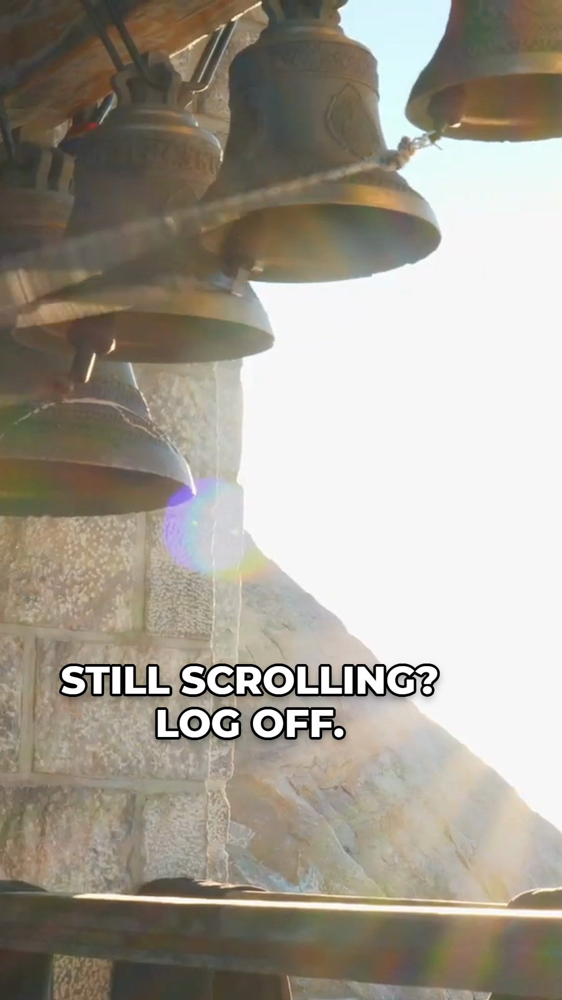
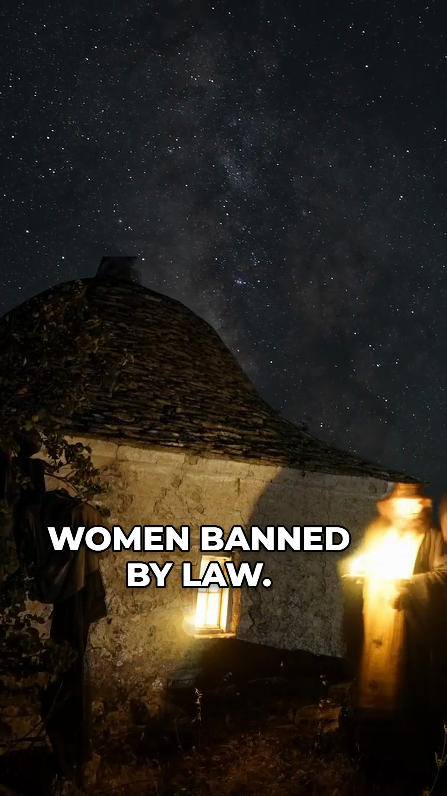
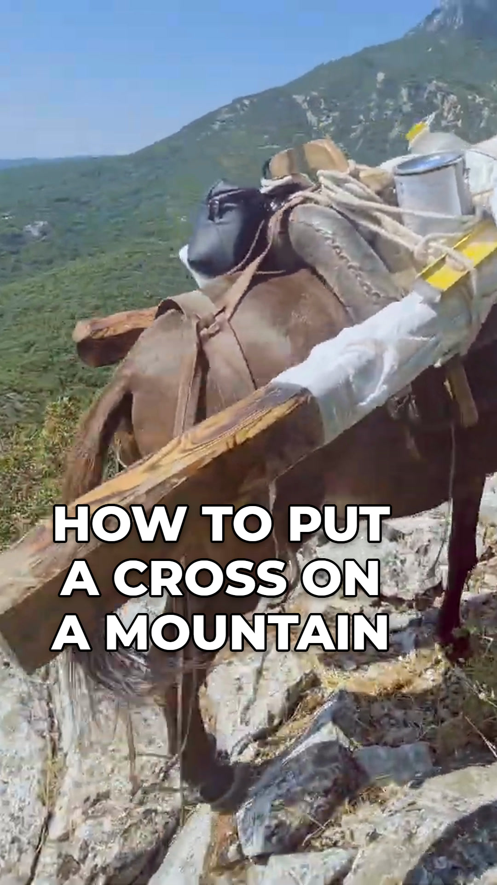
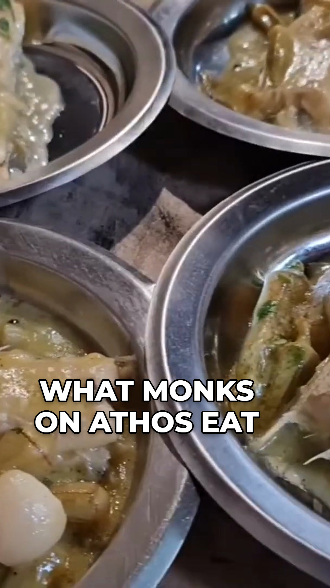
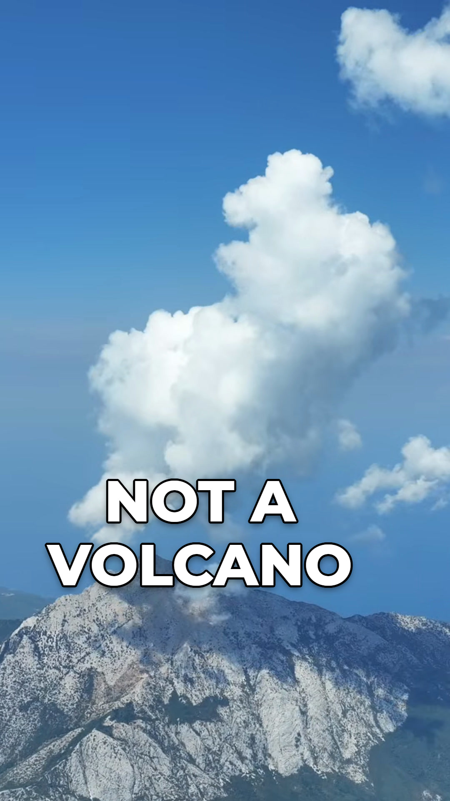
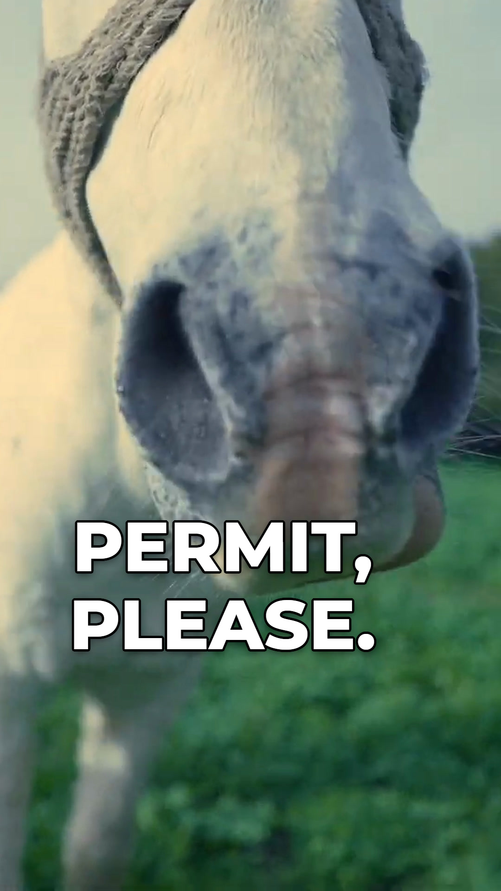
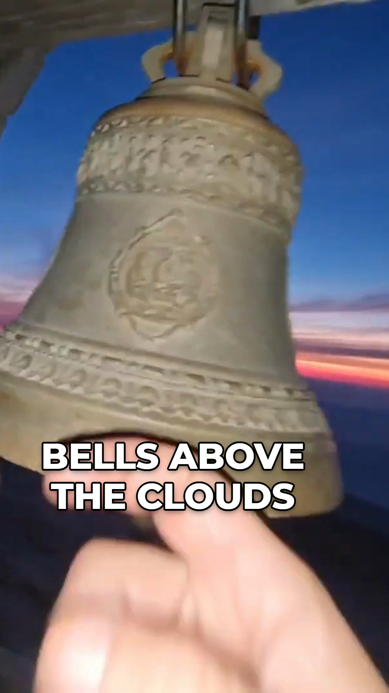

ATHOS.travel
Афон: образцы роликов
7 образцов для англоязычного канала. Один файл на YouTube Shorts, Instagram Reels и TikTok. Нажмите на обложку: ролик запустится со звуком, рядом название и описание для каждой площадки.

01 STILL SCROLLING? LOG OFF
Контраст: лента -> колокол -> Афон 
02 WOMEN BANNED BY LAW
Ночная служба на вершине 
03 HOW TO PUT A CROSS ON A MOUNTAIN
Как поставить крест на вершину 
04 WHAT MONKS ON ATHOS EAT
Что едят монахи Афона 
05 NOT A VOLCANO
Не вулкан 
06 PERMIT, PLEASE
Пограничный контроль Афона 
07 BELLS ABOVE THE CLOUDS
Включи звук × Закрыть
YouTube Shorts: название Скопировать
YouTube Shorts: описание Скопировать
Instagram Reels и TikTok: подпись Скопировать